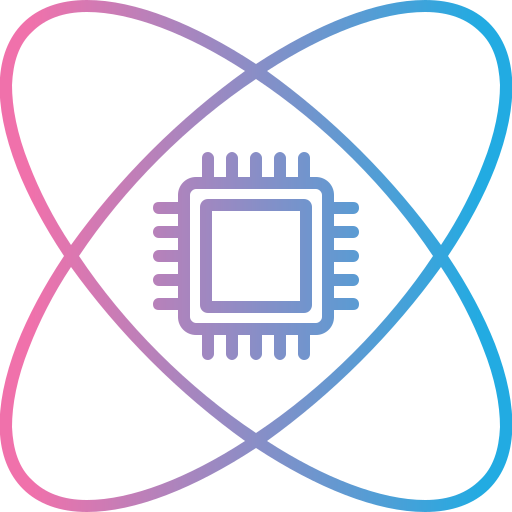

QWeDev

Summary
Full-stack developer and educator focusing on training and building a professional portfolio.
Education
- Bachelor of Arts, Liberal Studies (Mathematics Education) - Reach University
Work Experience
Skills
- Java
- C++
- Python
- Linux
- HTML, CSS, & JS
- Figma
- Github
Awards & Certifications
- NASA - National Aerospace Scholar
- LSAMP Scholarship
- Diversity in Computing Scholarship
- 2026 SXSW Guest Speaker
Other